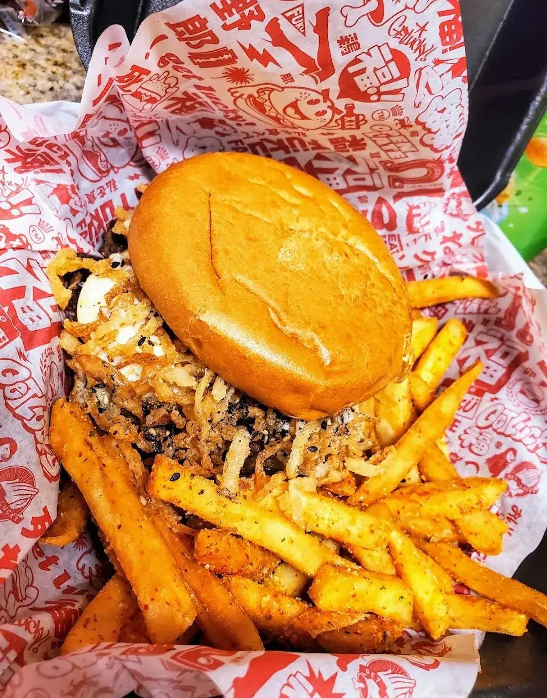

Fuku Burger Chinatown
Japanese-Style Burgers
3429 S Jones Blvd, Las Vegas, NV 89146
Rating: 5/5
Great burgers and fries.
BUTA Burger: all-beef Fukupatty, applewood-smoked bacon, American cheese, pickled red onions and red ginger, Japanese BBQ sauce and wasabi mayo
TAMAGO Burger: all-beef Fukupatty topped with a fried runny egg, furikake, crispy onion strings, teriyaki and wasabi mayo
About the place
Fukuburger began in 2010 as a late-night food truck in Chinatown, started by Colin Fukunaga with co-owner Robert “Mags” Magsalin, and became one of the first gourmet food trucks in Las Vegas. This Chinatown restaurant opened in 2015 in the former White Rabbit Cafe space on S Jones Blvd. The menu is all-American burgers with Japanese twists, like the original Fukuburger with wasabi mayo and Fuku sauce, the Tamago with a fried egg, the bacon-loaded Buta, the Kinoko and the spicy Karai, plus chicken katsu, the Naga Dog, and seasoned Fuku Fries or gravy-topped Jazz Fries. It's open late every day, and there's a second location on S Buffalo.
What other diners say: Reviewers on Yelp and Tripadvisor often praise the juicy burgers, the sauces, and the seasoned Fuku Fries and Jazz Fries, along with the friendly staff. Many mention the Chinatown dining room is small, with limited seating, and a few found the Jazz Fries salty or greasy.
Sources: the Las Vegas Sun, Las Vegas Weekly, Eater Vegas, Fukuburger's website, Yelp and Tripadvisor. Summaries are paraphrased, not quotes.


Comments
Leave a comment with just your name, or sign in with Google.